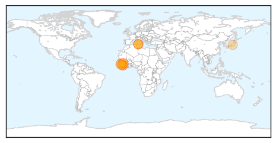
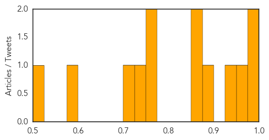

Ebola
30-Day Web Trend
0 alerts, 0 warnings

30-Day Twitter Trend
1 alerts, 0 warnings

Article Locations
Article Confidences

Top Articles:
- 1.000
- Can anything stop West Africa’s outbreak of Ebola?
- 1.000
- Deadly Ebola virus outbreak spreads in West Africa
- 1.000
- Sierra Leone Ebola Death Toll 'Doubles To 12 In A Week'
- 1.000
- Ebola death toll keeps climbing in West African countries
- 1.000
- Prayers, precautions in W Africa amid Ebola threat (Update)
- 0.998
- Ebola Virus Disease in West Africa 11 New Cases, 3 Deaths
- 0.998
- Sierra Leone Ebola Death Toll Doubles
- 0.997
- Ebola Death Toll Doubled in Sierra Leone: Official Statement
- 0.995
- Sierra Leone ebola death toll doubles to 12 in a week
- 0.995
- Pharmacy board schools pharmacy owners on ebola virus « Awoko Newspaper
- 0.971
- UNICEF Guinea: Humanitarian Situation Report, 4 June 2014 - Guinea
Top Tweets:
-
No tweets found for Jun 10, 2014
Measles
30-Day Web Trend
1 alerts, 0 warnings

30-Day Twitter Trend
0 alerts, 0 warnings

Article Locations

Article Confidences
Top Articles:
- 0.995
- Largest Measles Outbreak in 20 Years Tests Health Departments
- 0.978
- Pharmacists in Ohio can now administer measles, mumps, rubella vaccines - Twinsburg Bulletin
- 0.962
- Rotavirus vaccines have saved nearly $1 billion
- 0.944
- How 1 Unvaccinated Child Sparked Minnesota Measles Outbreak
- 0.875
- Somalia: UN agencies call for immediate action to curb measles outbreaks
- 0.872
- Vaccine combo doubles seizure risk in babies
- 0.851
- Alarming: 165 rubella cases reported in five months
- 0.768
- Ohio governor eases access to vaccines amid outbreaks
- 0.765
- Measles Reported in Highland County
- 0.740
- UN agencies concerned about outbreaks of measles in Somalia
- 0.708
- Outbreak Of Highly Contagious Measles Threatens Thousands of Children in Somalia, UN Says
- 0.577
- Measles threatens thousands of children in Somalia
- 0.518
- Vaccine Combo linked to Increased Seizure Risk for Toddlers
Top Tweets:
-
No tweets found for Jun 10, 2014